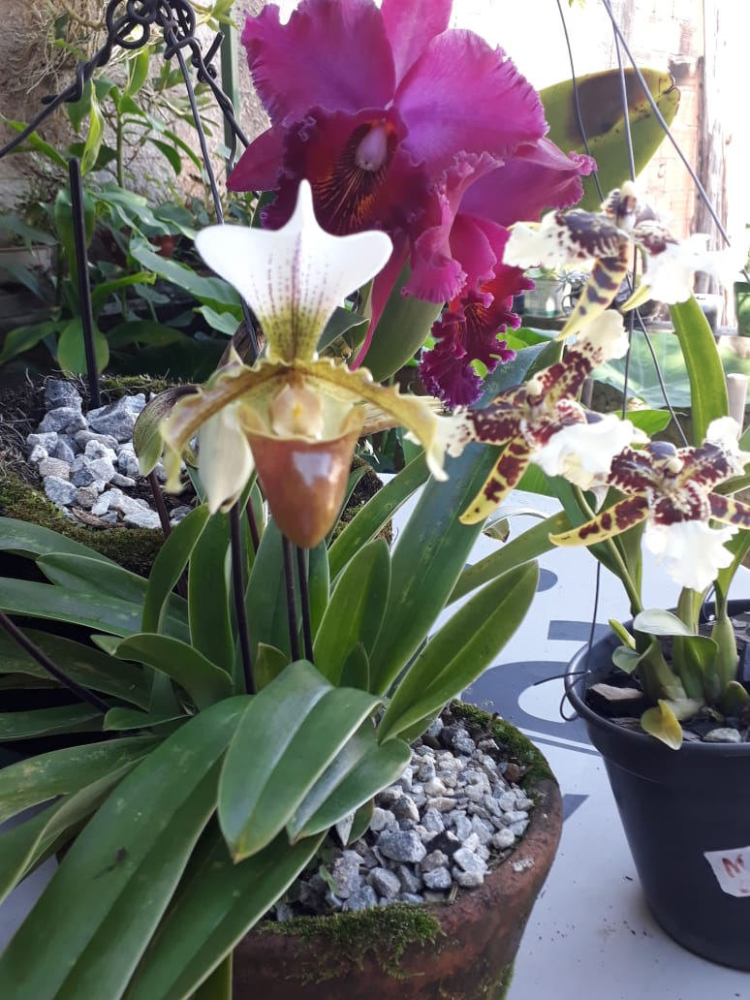
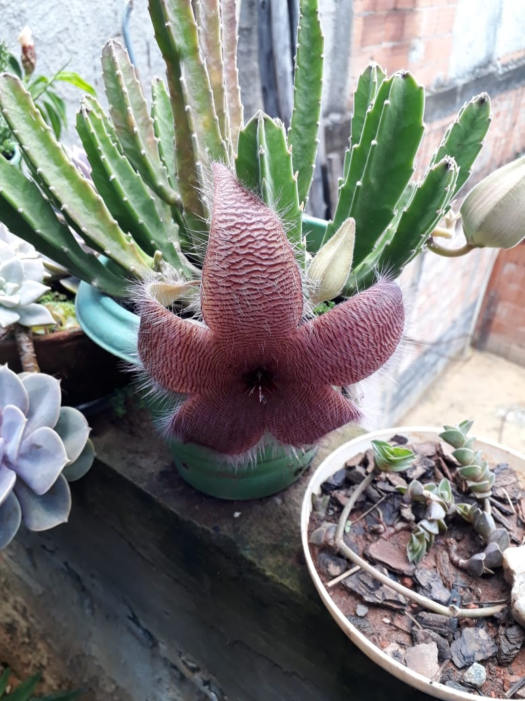

Foto é História
FOTO É HISTÓRIA
Categoria: flores

Foto capturada a partir de um aparelho smartphone.
Título: Sapatinho.
Autoria:Bruna Maciel
Botão

Foto capturada a partir de um aparelho smartphone.
Título.Cactos!
Autoria:Norma
Botão

Foto capturada a partir de um aparelho smartphone.
Título:príncipe Negro .
Autoria:Norma
Botão

Foto capturada a partir de um aparelho smartphone.
Título: Meu orquidário.
Autoria:Maria Antônia
Botão

Foto capturada a partir de um aparelho smartphone.
Título: Bailarina.
Autoria:Lucineia Gomes
Botão

Foto capturada a partir de um aparelho smartphone.
Título: Catteya.
Autoria:Maria Antônia
Botão